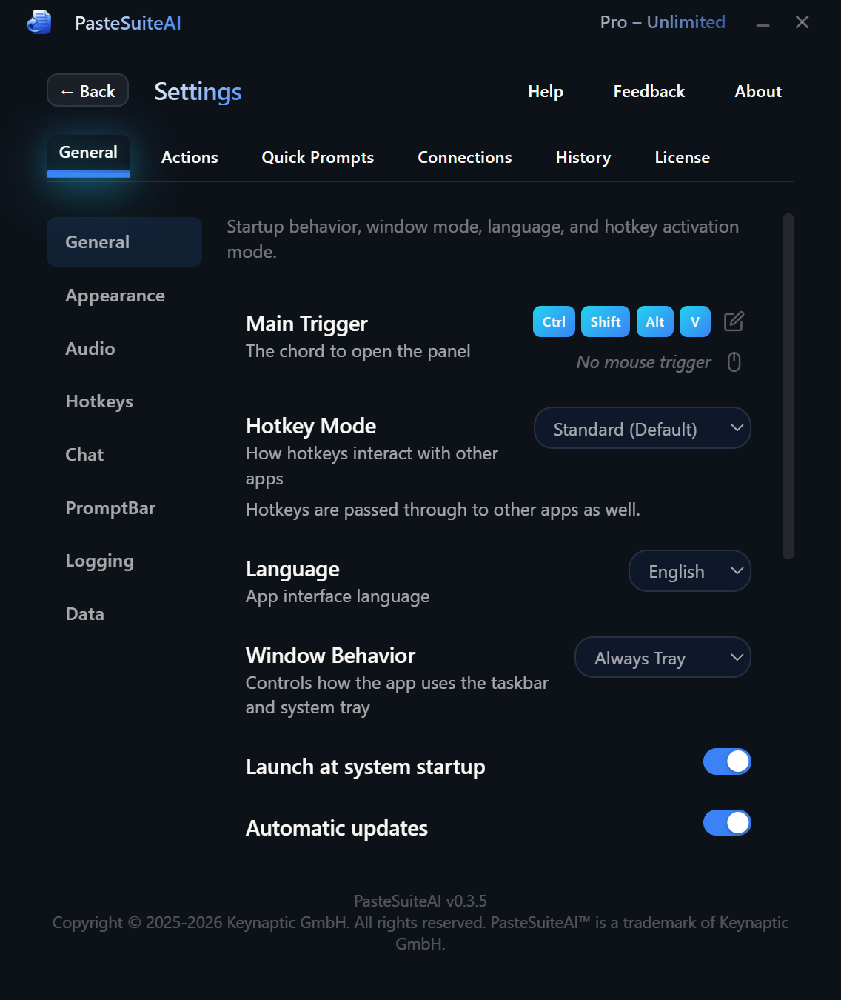

Settings
Configure app behavior, appearance, hotkeys, and more
Settings control everything from how PasteSuiteAI looks and starts up, to how the PromptBar behaves and what safety limits are applied to AI calls. Open settings by clicking the gear icon in the title bar.

Overview
Settings are organised into tabs:
- General — hotkey, startup, window behavior, appearance, logging, data, safety
- Actions — manage and configure actions
- Connections — manage AI provider connections
- Quick Prompts — manage quick prompt buttons on the PromptBar
- History — clipboard history settings
- License — view and activate a license key
This page covers the General tab. All changes in the General tab take effect immediately.
Restore Defaults
The Restore Defaults button at the top of the General tab resets app settings, actions, and quick prompts to their factory defaults. Connections are not affected — your API keys and provider configurations are preserved.
| Element | Type | Description |
|---|---|---|
| Restore Defaults | Button | Resets all app settings, actions, and quick prompts to factory defaults. Connections are not affected. |
PromptBar Configuration
These settings control how the PromptBar behaves when you submit a prompt. See the PromptBar doc for a full explanation of each execution mode.
| Element | Type | Default | Description |
|---|---|---|---|
| Auto-Enter | Toggle | Off | Automatically presses Enter in the target application after delivering the AI result. Useful for chat apps where you want to send the message immediately. |
| Execution Mode | Dropdown | Overlay | What happens when you press Enter in the PromptBar:
|
| Overlay Mode | Mode Toggle | Overlay Button | Controls when the result overlay appears (only relevant when Execution Mode is Overlay):
|
| Overlay Position | Dropdown | Cursor | Where the result overlay appears: at the cursor position, or pinned to one of the four screen corners (upper/lower left/right). |
| Overlay Duration | Number Input | 20 | How many seconds the result overlay stays visible before automatically dismissing. Set to 0 for the overlay to stay until manually dismissed. |
| LLM Connection | Dropdown | Default routing | Overrides the default LLM connection specifically for PromptBar AI Paste. Leave at "Default routing" to use the starred LLM connection. Useful when you want a faster or cheaper model for quick PromptBar queries. |
| Chain Action | Dropdown | None | Feeds the PromptBar result into another action as its input. The chained action runs immediately after the PromptBar AI response. Select "None" to disable chaining. |
Main Hotkey
The main hotkey is the global keyboard shortcut that activates PasteSuiteAI from any application. The default is Ctrl+Shift+Alt+V.
You can configure the hotkey as a single combination or as a chord (a two-key sequence). For example, Ctrl+K followed by Ctrl+V. A double-tap option is also available for some combinations.
| Element | Type | Description |
|---|---|---|
| Chord Selector | Key Capture | Click the capture field and press your desired key combination. The chord selector supports two-key sequences for the main hotkey. Conflicts with action hotkeys are detected and flagged. |
Startup & Updates
| Element | Type | Default | Description |
|---|---|---|---|
| Launch on Windows Startup | Toggle | On | Registers PasteSuiteAI in the Windows startup registry so it launches automatically when you log in. |
| Auto-Update | Toggle | On | Checks for new versions when the app launches. If an update is found, you are prompted to install it. |
| Unattended Update | Toggle | Off | Installs updates silently in the background without showing a prompt. Only visible when Auto-Update is enabled. |
Window Behavior
| Element | Type | Default | Description |
|---|---|---|---|
| Window Mode | Dropdown | Always Tray | Controls when the app appears in the taskbar vs. the system tray:
|
| Close on X | Toggle | Off | When off (default), clicking the X button minimizes the window instead of closing the app. When on, clicking X exits the application. |
| Show Help Button | Toggle | On | Shows or hides the Help button in the main panel footer. The Help button launches an interactive guided tour of the interface. |
Appearance
| Element | Type | Default | Description |
|---|---|---|---|
| Window Decorations | Toggle | Off | When on, shows the native Windows title bar with standard minimize/maximize/close buttons. When off (default), uses the custom frameless window design. |
| Window Transparency | Slider | 0% | Sets the window transparency level. Slide right to make the window more transparent. Displayed as a transparency percentage (0% = fully opaque). |
| Auto-Resize | Toggle | On | Automatically adjusts the window height to fit the content. When off, the window stays at a fixed height and scrolls internally. |
| UI Scale | Slider | 140% | Sets the zoom level for the main application window. Range: 100%–300% in 10% steps. Changes apply immediately. Use this to make the interface larger on high-DPI displays. |
| Prompt Library Overlay Scale | Slider | 140% | Sets the zoom level for the floating Prompt Library overlay window. This is independent from the main UI Scale. |
| PL Show Edit/Delete | Toggle | Off | Shows Edit and Delete buttons on prompt entries in the Prompt Library overlay. When off, the overlay is read-only for faster access. |
| Result Overlay Scale | Slider | 140% | Sets the zoom level for the floating result overlay that displays action output. Independent from both the main UI Scale and Prompt Library Overlay Scale. |
| Background Color | Color Picker | #0D1219 | The main window background color. |
| Text Color | Color Picker | #FAF9F6 | The primary text color throughout the interface. |
| Box Color | Color Picker | #0f172a | The background color for input boxes, cards, and elevated surfaces. |
| Gradient Color 1 | Color Picker | #FAF9F6 | The start color of the gradient used for the app title and accent text. |
| Gradient Color 2 | Color Picker | #3b82f6 | The end color of the gradient used for the app title and accent text. |
Logging
PasteSuiteAI writes a log file to its application data folder. The log is truncated (not appended) on each launch, so it only ever contains the current session.
| Element | Type | Default | Description |
|---|---|---|---|
| Enable File Logging | Toggle | On | Enables writing diagnostic output to a log file. Disable this if you are concerned about disk writes or do not need logs. |
| Max Lines | Number Input | 2000 | The maximum number of log lines kept per session. When the limit is reached, older lines are rotated out. Valid range: 100–99,999. Only visible when logging is enabled. |
Data Management
Back up and restore all your PasteSuiteAI data, or permanently delete everything to start fresh.
| Element | Type | Description |
|---|---|---|
| Export Data | Button | Exports all data — actions, user prompts, connections, quick prompts, and settings — to a JSON file. The file is named pastesuiteai-backup-YYYY-MM-DD.json. Use this to back up your configuration or transfer it to another machine. |
| Import Data | Button | Restores data from a previously exported JSON file. Actions and user prompts are imported using an upsert merge (existing items are updated, new items are added). Connection references that no longer exist are cleared. A summary of what was imported is shown after completion. |
| Delete All Data | Button + Confirmation | Permanently deletes all user data including settings, actions, connections, prompts, and usage history, then exits the app. To confirm, type DELETE in the confirmation input and click the Confirm button. Click Cancel to abort. |
Safety
The Safety section provides a daily API call limit to prevent runaway costs from misconfigured actions or unintended usage.
| Element | Type | Default | Description |
|---|---|---|---|
| Daily API Call Limit | Number Input | 500 | The maximum number of AI API calls allowed per calendar day (UTC). Once the limit is reached, all AI actions are blocked until midnight UTC. Non-AI actions (such as Paste as Plain Text) are never blocked. Valid range: 10–100,000. |
The current usage count (API calls today / limit) is displayed below the input field when a license is active.
Related Topics
- Connections — Manage AI providers, API keys, and models
- Actions — Configure hotkeys and AI transforms
- Keyboard Shortcuts — Full list of all hotkeys and how to configure them
- PromptBar — Inline AI text input and quick prompts
- Prompt Library — Save and reuse system prompts
- Result Overlay — Floating output window configuration
- History — Clipboard history settings
- Licensing — Trial, free tier, and license key activation